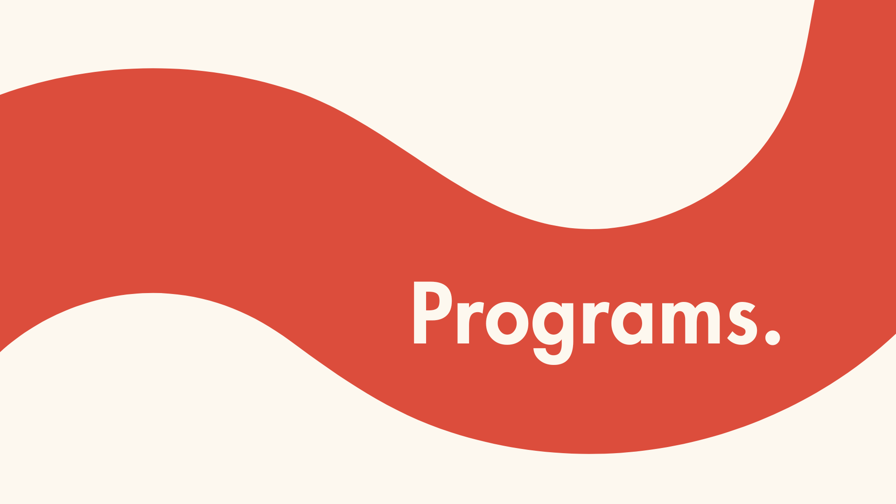

The Avenue Core Cohort is our inaugural 8-week intensive for undergraduate women who are serious about breaking into venture capital. This isn't a lecture series — it's a hands-on training program built around the real workflows of early-stage investing, led by active investors who do this work every day.
* Learn how venture capital funds operate, how investors evaluate opportunities, and how decisions are made across different stages of investing
* Develop core skills in investment thinking, deal sourcing, relationship building, and startup evaluation
* Apply your knowledge through a hands-on investment project, sourcing and evaluating real companies alongside fellow cohort members
* Build meaningful relationships with investors, founders, operators, and ambitious undergraduate women across the Avenue community
* During Weeks 5–8, participants will source and evaluate a company of their choice and develop an investment thesis
* Present your recommendation to a panel of investors, including cohort instructors and guest investors
* Gain direct feedback from industry professionals and experience your first real venture-style pitch
To apply, you must have attended at least one Avenue event and completed a coffee chat or interview with our team. We're looking for women who are ready to go beyond exposure and start building real fluency in venture capital.
Our 8-week program empowers university women to break into venture capital — no experience required. We’re rewriting the rules of access — with zero gatekeeping, real-world insights, and a thriving community.
* 8-week Zoom series with VC guest speakers with diverse industry backgrounds
* Learn core VC concepts
* Form 1:1 connections with industry professionals and with other ambitious undergraduate women
* Support driven women exploring VC
* Connect to NYU’s award-winning Entrepreneurship Institute - contributing to NYU’s #1 global rank for % of funded companies led by female founders
* Amplify your firm’s visibility and impact through our network
Our 2025 speaker lineup features a diverse range investors, including VCs focused on government-related investments, corporate venture, the gaming and media industry, university venture funds, and more.